The demo shot. The hallway is real drone footage; the droid, its light and its reflection were added in Blender.
Track. Build. Belong.
Putting something in a real place is mostly about what it does to that place: the light it throws and the shadow it casts.
My supports
Turn on any help you want. Your teacher may have set some for you. They change how the guide helps, not what is assessed.
Shot brief
Something is patrolling the hallway.
The plate is a nine-second drone flight down a school hallway. Deliver the same shot with a flying machine of your own design that lights the real floor, and a change of the director’s choosing.
You will hand in
A solve under 1 px (screenshot of the solve error)
The finished shot as an MP4
The director’s change, with a three-sentence explanation
Credits
Footage and rules
The footage is your teacher’s. Get it from the class folder and do not post it. Your droid must be an original design.
Every creature, vehicle or robot added to real footage starts with a matchmove: an artist rebuilds the camera’s move and a rough copy of the set. Lighting and compositing artists then make the new thing affect that set. You do each job here.
Knowledge first
Why this works.
A track needs fixed points
Blender follows dozens of points and works out the one camera move that explains them all. Points that are not fixed in the world, like reflections, spoil it.
Know your lens
Give the solver the real focal length when you can. Left to guess, it can find a wrong lens that still gives a low error.
Footage is flat; stand-ins give it shape
Simple planes placed on the solved points let shadows, light and reflections land where the real surfaces are.
Design principles in the shot
Emphasis: a coloured light in a neutral hallway. Movement: the droid leads the eye down the hall. Unity: its light and shadow tie it to the place.
What this assesses
Skills you will show.
Skill (sprint skill ID)
Where you show it
Camera tracking and integration · VP-TRK-01 · VP-INT-01
Steps 2 to 4, 8 and 9
Keyframe animation · BL-KEY-01
Step 6
Lighting and render · BL-LGT-01 · BL-RND-01
Steps 7 and 8
Critique and refinement · GD-CRIT-01
Step 10
Primary achievement evidence: the director’s change (step 10). Guided steps and supports are recorded separately from achievement. Shot-library option in sprint mm12-26-s08.
Session A · Lesson 1 · VFX shot library
Track the camera.
A drone flies down your school hallway. Before anything can be added, Blender has to know exactly how that camera moved.
TODAYStudy and plan (15 min), detect and track (25 min), solve and clean (25 min).
01
Watch the shot and study the plate
Start here: read or listen to the theory deck (about 10 minutes, with checkpoint questions), then come back.
IN SHORTWatch; list good and bad track points; note where the floor is shiny; plan.
READ ALOUD
DOCUMENT: The finished demo · the hallway plate SELECT: Nothing yet TOOLS / ROUTE: Play · pause · look
Play the finished demo. List what the droid does to the real hallway: where its light lands, where it reflects.
Scrub the plate. The camera flies forward and drifts right. Which things stay sharp and still enough to follow? (Corners, signs, door frames, light fittings.)
Which things would be bad to follow? (Reflections on the polished floor: they slide as the camera moves.)
Look at the floor. Where is it shiny and where is it dull? That decides where a reflection can show.
Write a three-line plan: what you track, what you build, what you composite.
1 · Track
Blender works out how the real camera flew down the hall.
2 · Build
Invisible copies of the floor and walls, a droid of your own design, and its scanner light.
3 · Composite
Shadow, light and reflection go onto the real footage; the droid goes over the top.
The demo: an original droid, tracked into the teacher’s drone clip, all in Blender.
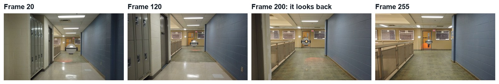
Four frames from the demo.
STEP CHECKLIST
GLOSSARY
Plate: The filmed footage you add effects to
Camera track: Rebuilding the real camera’s move in 3D from the footage
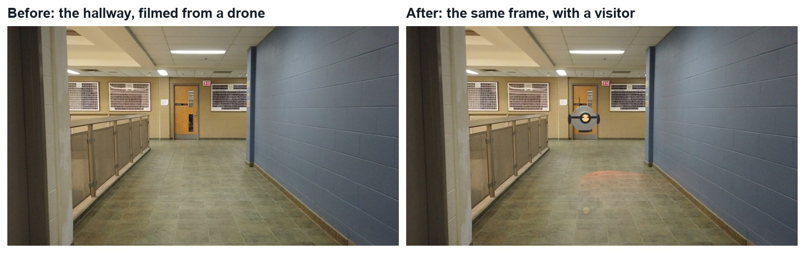
The plate and the finished frame. Nothing in the hallway is replaced; things are added to it.
WHYA camera track only works on points that are fixed in the real world. Reflections and highlights move, so they lie to the solver.
CHECKA list of good and bad things to track, and a three-line plan.
FIXNot sure a point is fixed? Scrub and watch it against a door frame. If it slides, do not use it.
WORKED EXAMPLE · DIFFERENT OBJECTThe demo uses the first 270 frames (9 seconds) of the clip.
STRETCH (AFTER THE CHECK PASSES)Film your own 10-second move down a different corridor for a later project.
Method basis: B1. Values and sequence are authored for this project.
02
Detect features and track them
IN SHORTOpen clip; Set Scene Frames; Detect on frames 1, middle and end; track both ways; delete sliders.
READ ALOUD
DOCUMENT: HallMonitor_YourName.blend · Movie Clip Editor SELECT: About 150 markers that last most of the shot TOOLS / ROUTE: Open clip · Set Scene Frames · Detect Features · Track
Open the Motion Tracking workspace. Open the first image of the plate; Blender loads the whole sequence. Click Set Scene Frames.
Go to frame 1. In the Track tab click Detect Features. Raise or lower Threshold in the pop-up until you get 40 to 60 markers spread over the whole frame.
Click Track Forwards (the arrow buttons under Tracking Settings). Wait until it reaches the end.
Go to the middle of the shot and to the last frame. Detect Features again on each, then track backwards and forwards. New parts of the hall come into view, so they need their own markers.
Play it back. Delete any marker that slides along a reflection or jumps (select it, press X).
STEP CHECKLIST
GLOSSARY
Marker: A small box that follows one point of the picture
Feature: A corner or dot with enough contrast to follow
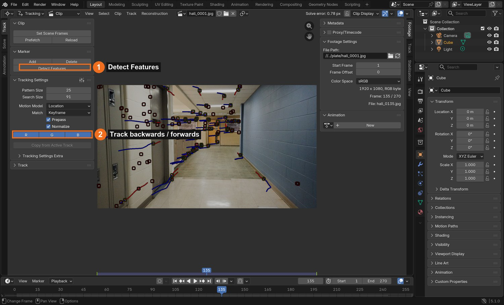
Real screenshot, frame 135: markers with their paths. Red is where a marker came from, blue is where it goes.
WHYOne frame’s markers do not last the whole shot: things leave the picture. Detecting at the start, middle and end keeps enough markers alive on every frame.
CHECKMarkers spread across the hall on every frame, none of them on reflections.
FIXMarkers die after a few frames? Raise Search Size in Tracking Settings. All bunched in one area? Lower the Detect threshold, or add a few by hand with Ctrl-click.
WORKED EXAMPLE · DIFFERENT OBJECTDemo settings: Pattern Size 25, Search Size 91, Motion Model Location. Detect: threshold 0.18, minimum distance 70. Result: 217 tracks.
STRETCH (AFTER THE CHECK PASSES)Lock (Ctrl-L) your ten best tracks so you cannot delete them by accident.
Method basis: B1. Values and sequence are authored for this project.
03
Solve the camera and clean the solve
IN SHORTLens 26.3 mm; keyframes 1 and 270; solve; clean at 3, 2, 1.2; under 1 px; Setup Tracking Scene.
READ ALOUD
DOCUMENT: HallMonitor_YourName.blend · Movie Clip Editor › Solve tab SELECT: A solve error under 1 pixel TOOLS / ROUTE: Keyframe A / B · Solve Camera Motion · Clean Up
In the Track panel on the right, set the camera’s Focal Length to 26.3 mm and Sensor Width to 36 mm. This is the drone’s lens.
Solve tab: set Keyframe A to 1 and Keyframe B to 270. Leave Refine › Focal Length off. Click Solve Camera Motion.
Read the Solve error at the top of the editor. A first try is often 5 to 10 pixels. That is normal.
Open Clean Up. Set Error to 3, Action to Delete Track, and click Clean Tracks. Solve again. Repeat with Error 2, then 1.2.
Stop when the error is under 1 pixel and you still have at least 100 tracks. Then click Set as Background and Setup Tracking Scene.
What went wrong when we built the demo: we first let Blender refine the focal length. The error looked good, but the lens it chose ran from 276 mm down past 50 mm as tracks were removed: nonsense for a wide drone camera, and the 3D hallway came out squashed. Typing in the real lens (26.3 mm, known from another clip shot with the same drone) gave a clean 0.78 px solve. Know your lens.
STEP CHECKLIST
GLOSSARY
Solve error: The average miss, in pixels, between solved points and their markers
Focal length: How wide or narrow the lens sees
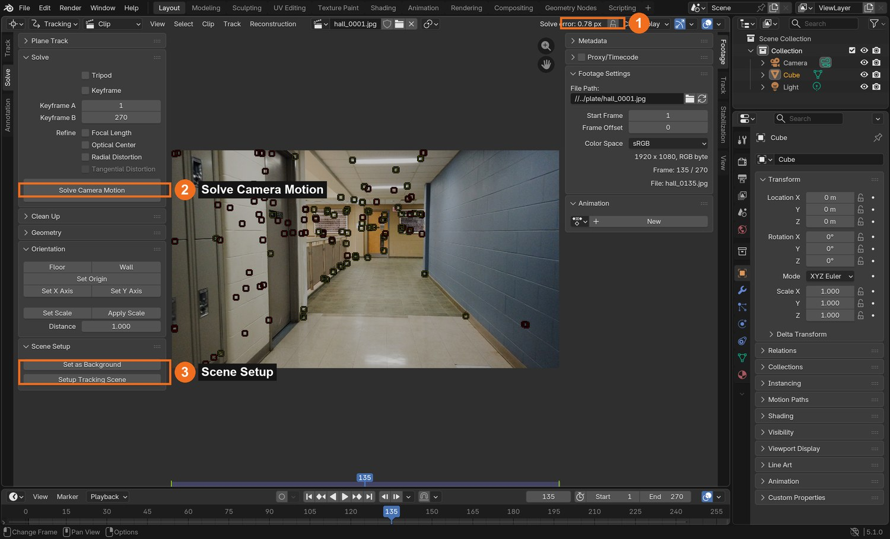
Real screenshot: the Solve tab. The solve error (1) reads 0.78 px after cleaning.
WHYThe solve error is how far, on average, the solved 3D points miss their markers. Removing the worst liars lets the rest agree.
CHECKA solve error under 1 px with 100 or more tracks, and a tracking scene set up.
FIXError will not drop? You have markers on reflections or on the moving edge of the frame. Find them by selecting the tracks with the highest error.
WORKED EXAMPLE · DIFFERENT OBJECTDemo result: 0.78 px, 177 tracks, 270 solved frames.
STRETCH (AFTER THE CHECK PASSES)Solve once with Refine › Focal Length ticked and compare the lens it guesses with 26.3 mm.
Method basis: B2. Values and sequence are authored for this project.
Session B · Lesson 2 · VFX shot library
Build what the hall needs.
The real hallway is only a flat picture. To catch a shadow, a light or a reflection it needs simple 3D stand-ins. Then you build the visitor.
TODAYStand-ins (20 min), build the droid (25 min), animate and light it (25 min).
04
Lay stand-ins over the real floor and walls
Recall first (from last lesson, no peeking):
Why are reflections on the floor bad things to track?
What does the solve error measure, and what number is good enough?
Why did the demo type the focal length in?
Say or write your answers, then check them against your file.
IN SHORTCamera view; floor plane through the floor dots; walls, end wall, ceiling; white rough material.
READ ALOUD
DOCUMENT: HallMonitor_YourName.blend · Layout, camera view SELECT: A floor plane, two walls, an end wall and a ceiling TOOLS / ROUTE: Add › Mesh › Plane · G / R / S · Numpad 0
Press Numpad 0. You see the plate with small dots: the solved points. Dots on the floor show where the floor is.
Add › Mesh › Plane. Scale it long and narrow and move it until it lies through the floor dots for the whole shot. Scrub to check it does not slide.
Duplicate it and stand it up for the left wall and the right wall, through the dots on the lockers and the blue wall.
Add an end wall at the far door and a ceiling through the light fittings.
Give all five a plain white material with Roughness 1. They will never be seen; they only catch light and shadow.
Click by click (real Blender screenshots)
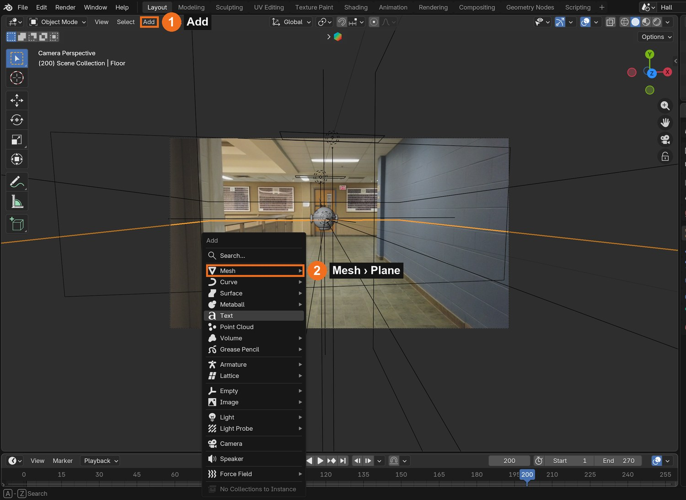
Add (1) › Mesh (2) › Plane.
STEP CHECKLIST
GLOSSARY
Stand-in: A simple invisible shape that takes the place of something real
Bundle: A solved 3D point, shown as a dot or small empty
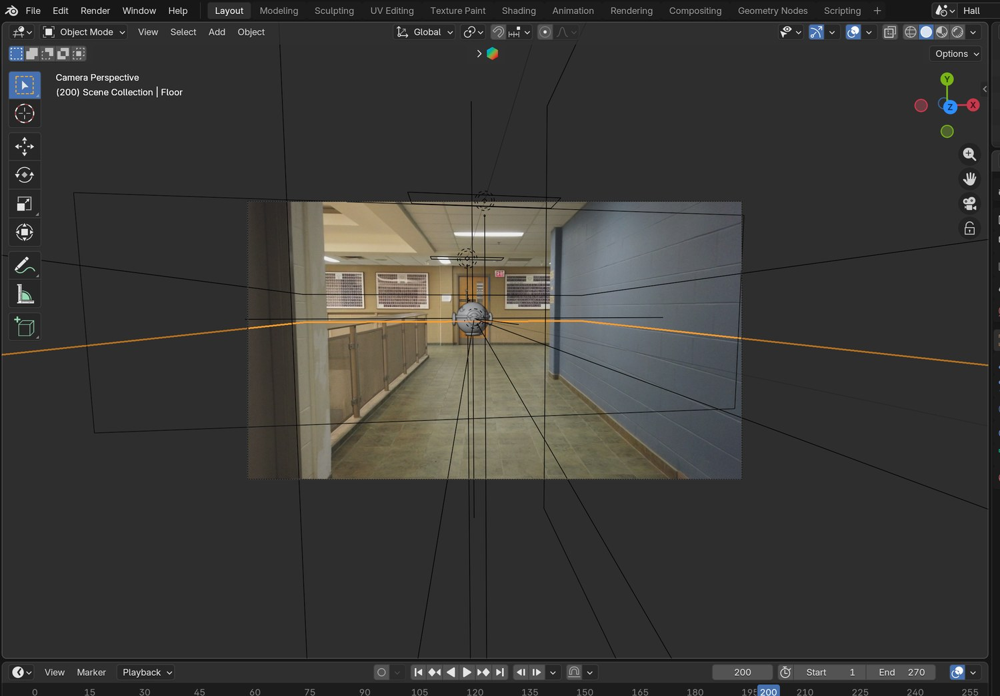
Real screenshot: the tracked camera’s view with the stand-ins drawn as wire over the plate.
WHYLight and shadow need surfaces. Stand-ins are a rough 3D copy of the real room, placed using the solved points.
CHECKFive flat stand-ins that stay locked to the real floor, walls and ceiling as you scrub.
FIXFloor slides against the plate? It is not at the height of the floor dots. Select a floor dot’s empty and snap the plane to it.
WORKED EXAMPLE · DIFFERENT OBJECTIn the demo’s solve the floor is 0.335 below the first camera and the hall is 0.74 wide: about 3.6 m per unit.
STRETCH (AFTER THE CHECK PASSES)Add a stand-in for the railing, so the droid can pass behind it.
Method basis: B1. Values and sequence are authored for this project.
05
Design and build your droid
IN SHORTSketch; Droid Empty; sphere body, ring, eye, fins; size from the hall; three materials.
READ ALOUD
DOCUMENT: HallMonitor_YourName.blend SELECT: A small flying machine made from simple shapes, parented to one Empty TOOLS / ROUTE: Add › Mesh · S / G / R · materials · Ctrl-P
Sketch it first: a body, one feature that shows which way it faces (an eye, a lens, a nose), and something that explains how it flies or senses.
Add › Empty and name it Droid. Build every part as a child of it, so the whole machine moves as one.
Body: a UV Sphere, shaded smooth. Add a ring (Torus), an eye (a small sphere in a short cylinder), fins or an antenna.
Size it from the scene: the hall is about 2.7 m wide, so a droid 40 cm across is roughly one seventh of the width.
Materials: one light metal, one dark trim, and an Emission material for the eye.
STEP CHECKLIST
GLOSSARY
Parent: An object that others follow
Silhouette: The outline of a shape; what you read first from a distance
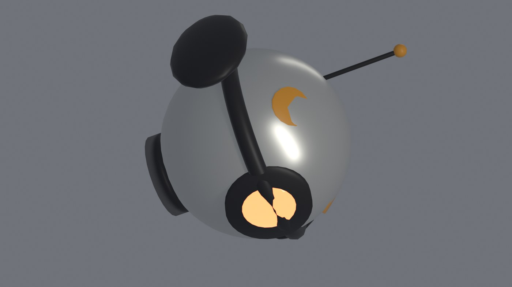
Real render: the demo droid. A sphere, a collar ring, one glowing eye, two fins, an antenna and amber marks. Your design must be your own.
WHYA design reads from far away when it has a clear silhouette and one obvious “face”. In a hallway shot the droid is small, so detail matters less than shape.
CHECKAn original droid, parented to one Empty, sized believably for the hall.
FIXParts left behind when you move it? They are not parented: select the parts, then the Empty last, and press Ctrl-P.
WORKED EXAMPLE · DIFFERENT OBJECTThe demo droid’s body radius is 0.078 units, about 28 cm.
STRETCH (AFTER THE CHECK PASSES)Original designs only: no characters, ships or droids from existing films or games.
Method basis: B4. Values and sequence are authored for this project.
06
Give it a performance
IN SHORTThree beats; key Location and Rotation; weave ahead of the camera; stop, turn, hold, leave.
READ ALOUD
DOCUMENT: HallMonitor_YourName.blend · camera view and Timeline SELECT: Six to eight keyframes on the Droid Empty TOOLS / ROUTE: I (Location and Rotation) · Graph Editor
Plan three beats: it travels, it notices something, it leaves. Write the frame number for each.
Frame 1: place the droid ahead of the camera at head height. Press I and key Location and Rotation.
Every 40 to 60 frames, move it further down the hall and a little side to side, and key again. Keep it in front of the camera: it should look as if the camera follows it.
The notice beat: over about 20 frames, stop it and turn it 180° to face the camera. Hold for a second. Turn it back and send it off faster.
Play it. Fix anything that looks like sliding on ice by adding a keyframe in between.
STEP CHECKLIST
GLOSSARY
Beat: One clear action or change in a performance
Hold: Keeping a pose still for a moment so it reads
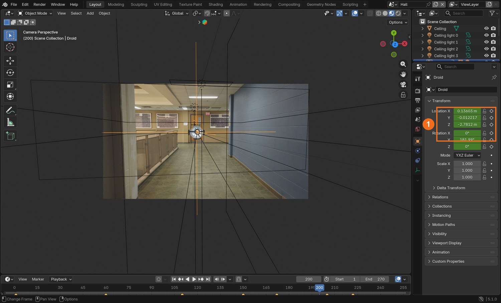
Real screenshot, frame 200: the droid has turned to look at the camera. The green fields (1) are keyed.
WHYHolding still is part of acting. A machine that stops, looks and then moves again seems to think.
CHECKA droid that travels, notices the camera and leaves, with no accidental sliding.
FIXDroid passes through a wall? Check from the top view (Numpad 7) as well as the camera.
WORKED EXAMPLE · DIFFERENT OBJECTDemo keys are at frames 1, 60, 110, 150, 172, 205, 222 and 270. It turns to face the camera between 150 and 172 and leaves from 205.
STRETCH (AFTER THE CHECK PASSES)Add a small up-and-down bob with a Noise modifier on the Z location curve.
Method basis: B4. Values and sequence are authored for this project.
07
Add the scanner light
IN SHORTSpot at the eye, parented; colour; Spot Size 50°, Blend 0.35; Power until it shows; sweep; two pulses.
READ ALOUD
DOCUMENT: HallMonitor_YourName.blend SELECT: A coloured Spot light parented to the droid, pointing ahead and down TOOLS / ROUTE: Add › Light › Spot · Color · Power · Spot Size
Add › Light › Spot. Parent it to the Droid Empty, place it at the eye, and tilt it to point ahead and down at the floor.
Pick a strong colour. Set Spot Size to about 50° and Blend to about 0.35 for a soft-edged pool.
Raise Power until, in Rendered view, a clear pool of colour lands on the white floor stand-in ahead of the droid.
Key the light’s rotation every 20 frames or so, so it sweeps a little from side to side.
When the droid looks at the camera, key two short pulses of extra Power.
STEP CHECKLIST
GLOSSARY
Interactive light: Light from an effect that falls on real things in the plate
Spot light: A light that shines in a cone
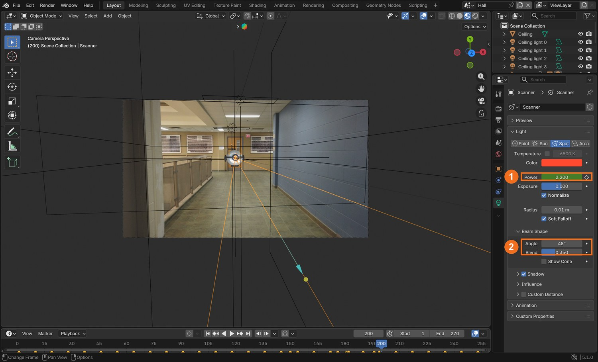
Real screenshot: the Scanner spot light selected. Power (1) is keyed; Spot Size and Blend (2) shape the pool.
WHYLight from a CG object landing on the real set is the strongest proof that the object is there. It is called interactive light.
CHECKA coloured pool of light that travels with the droid across the floor stand-in and climbs the walls when it gets close.
FIXNo pool? The spot is pointing up, or the floor stand-in is hidden. Pool is a hard-edged disc? Raise Blend.
WORKED EXAMPLE · DIFFERENT OBJECTDemo values: Power 2.2 W (9 W in the pulses), Spot Size 48°, Blend 0.35, red.
STRETCH (AFTER THE CHECK PASSES)Add a second, weak light under the droid for an engine glow.
Method basis: B3. Values and sequence are authored for this project.
Session C · Lesson 3 · VFX shot library
Passes, composite, deliver.
You render what the droid does to the hall as separate pictures, then use them to change the real footage.
Say or write your answers, then check them against your file.
IN SHORTdroid (transparent); shadow_a (no droid); shadow_b (droid invisible to camera); light (scanner only).
READ ALOUD
DOCUMENT: HallMonitor_YourName.blend SELECT: Four PNG sequences TOOLS / ROUTE: Outliner camera icons · Film › Transparent · Render Animation
Droid: hide the stand-ins from the render (camera icon in the Outliner). Tick Film › Transparent. Render to a folder called droid.
Lit, no droid: show the stand-ins, hide the droid and switch the scanner off. Untick Transparent. Render to shadow_a.
Lit, droid casting: show the droid again but untick Object properties › Visibility › Camera on its parts, so it casts a shadow without being seen. Render to shadow_b.
Scanner only: switch the room lights and World off and the scanner on, with the droid hidden. Render to light.
Check one frame of each before you render 270.
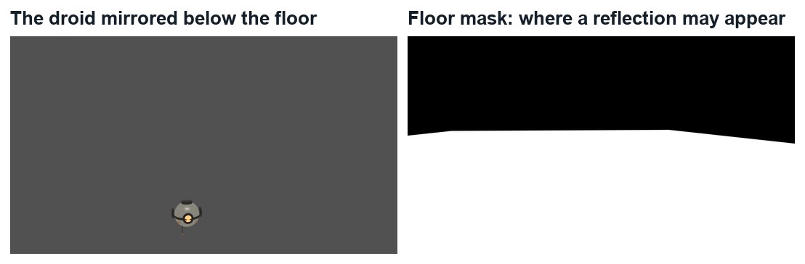
The two extra passes the demo uses for the reflection in the polished floor.
STEP CHECKLIST
GLOSSARY
Pass: One layer of a shot rendered on its own
Visible to camera: Whether the camera sees an object, separately from whether it casts shadows
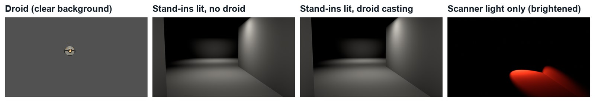
Real passes from the demo, frame 200.
WHYEach pass answers one question: what does the droid look like, what shadow does it cast, what does its light touch? Separate answers can be mixed in any strength later.
CHECKFour sequences of 270 PNGs. The light pass is black except where the scanner lands.
FIXShadow passes look identical? The droid is hidden from everything, not only from the camera. It must still cast shadows.
WORKED EXAMPLE · DIFFERENT OBJECTThe demo also renders the droid mirrored below the floor, and a white-floor mask, for the reflection.
STRETCH (AFTER THE CHECK PASSES)Render the reflection pass: parent the droid to an Empty scaled −1 on the up axis at floor height.
Method basis: B5. Values and sequence are authored for this project.
09
Composite: shadow, light, reflection, droid
IN SHORTBlur and Divide for shadow; Multiply; light × plate, then Add; Alpha Over; Bloom.
READ ALOUD
DOCUMENT: HallMonitor_YourName.blend · Compositing SELECT: The plate changed by the passes, with the droid on top TOOLS / ROUTE: Blur · Mix (Divide, Multiply, Add) · Alpha Over · Glare
Add the plate and your four passes as Image nodes (sequences of 270 frames).
Shadow: Blur both shadow passes a little, then Mix › Divide (A = shadow_b, B = shadow_a). The result is white everywhere except the shadow. Multiply the plate by it.
Light: Mix › Multiply the plate by the light pass, then Mix › Add that onto the plate. The real floor now carries the scanner’s colour.
Droid: Alpha Over, Background = the result so far, Foreground = the droid pass.
Finish with a Glare node set to Bloom with a high Threshold, so only the eye glows. Play the whole shot.
Click by click (real Blender screenshots)
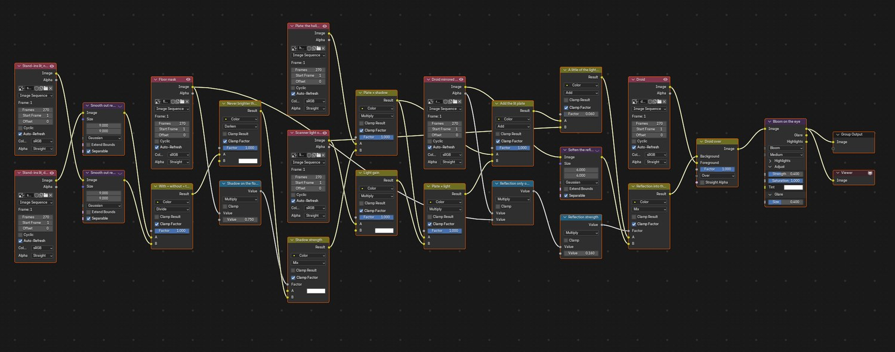
Real screenshot: the whole demo node tree. Left: plate and passes. Middle: shadow, light and reflection. Right: droid over, then bloom.
What went wrong when we built the demo: our first full render had speckle all over the ceiling and dark patches on the walls. The two shadow passes each carry a little random render noise, and dividing one by the other turns that noise into dots. Blurring both passes first, and keeping the shadow to the floor, fixed it.
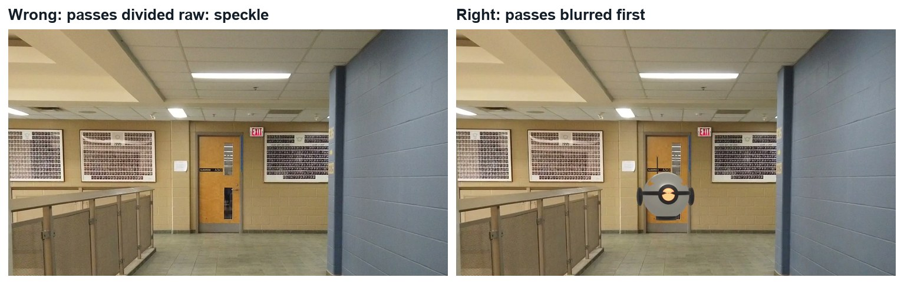
Wrong and right, same frame: the raw divide, and the divide after blurring.
STEP CHECKLIST
GLOSSARY
Divide: A blend that shows the ratio of two pictures
Alpha Over: The node that places a foreground with transparency over a background
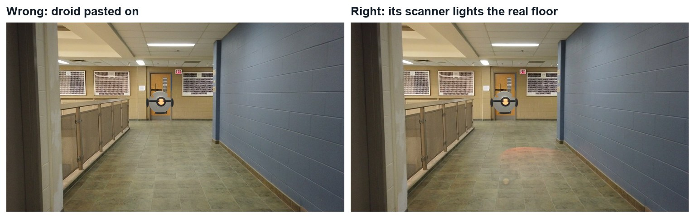
Wrong and right, same frame. Left: the droid pasted over the plate. Right: with its light on the floor.
WHYDividing “with droid” by “without droid” leaves only what the droid changed. Multiplying the plate by that puts the change onto the real footage, keeping its texture.
CHECKA shot where the scanner light slides across the real floor and walls with the droid.
FIXWhole picture goes dark or noisy? You divided the wrong way round, or did not blur first. Light looks like fog? Multiply by the plate before you add.
WORKED EXAMPLE · DIFFERENT OBJECTDemo values: shadow passes blurred 9 px, shadow strength 0.75 on the floor only; light gain 3.5; reflection 16 %; Bloom threshold 0.92.
STRETCH (AFTER THE CHECK PASSES)Add the floor reflection: blur the mirrored pass, limit it with the floor mask, and mix it in at 10 to 20 %.
Method basis: B5 · B6. Values and sequence are authored for this project.
10
Practical check: the director’s change, then render and defend
IN SHORTRead the card; pick the stage; change a copy; re-render what changed; defend; credit.
READ ALOUD
DOCUMENT: Your shot · the director’s card SELECT: Whatever the card requires TOOLS / ROUTE: Your own decisions
Read your director’s card (below).
Decide which stage it touches: track, stand-ins, droid, animation, light or composite. Change as little as possible, in a copy of your file.
Re-render only the passes the change affects, and render the shot (FFmpeg, H.264).
Screen it and explain one tracking choice and one compositing choice.
Credit the footage and anything you did not make.
Card
The director says
1 · Two of them
“It has a partner. The second one behaves differently.”
2 · It lands
“At the end it sets down on the floor and its light goes out.”
3 · Lights out
“The hall lights have failed. The scanner is the brightest thing in the shot.”
4 · Behind the railing
“It comes up from below, behind the railing, before it enters the hall.”
Independent evidence: the main achievement evidence for this tutorial.
STEP CHECKLIST
GLOSSARY
Revision: A requested change to a shot
WHYA shot built in passes can be changed without starting again. Knowing which passes to re-render is the professional skill.
CHECKA changed shot that meets the card, rendered, with an explanation and credits.
FIXStuck? Name the stage the card touches first. (Independent step: the Coach can explain tools but not decide your changes.)
WORKED EXAMPLE · DIFFERENT OBJECTWorked example on a different shot: a “make the light green” card needed only the light pass re-rendered.
STRETCH (AFTER THE CHECK PASSES)Take two cards at once.
Method basis: B5. Values and sequence are authored for this project.
Before you submit
Student QA.
Evidence conversation
Keep it short and specific.
SENTENCE FRAMESMy solve error was ___ after I ___. · The droid belongs in the hall because ___. · For the director’s card I re-rendered the ___ pass because ___.
Figures marked Illustration are drawn, not screenshots. Step values are starting points authored for this project. Draft for teacher review; not yet classroom-piloted.